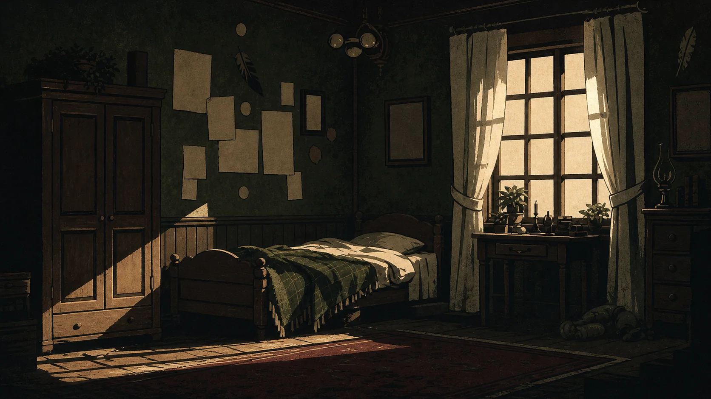
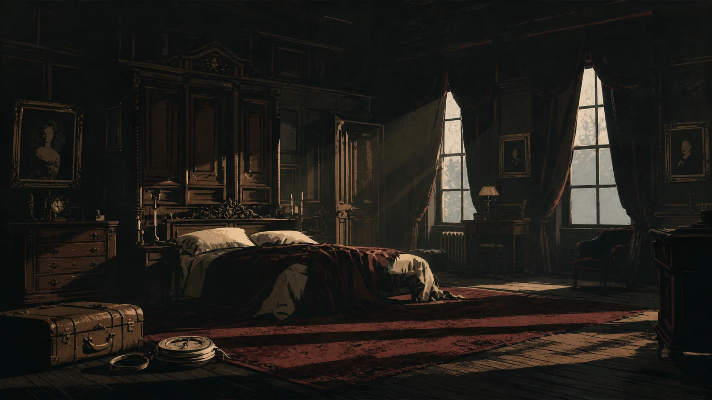
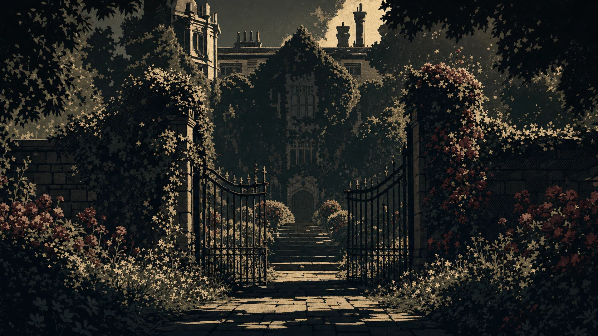
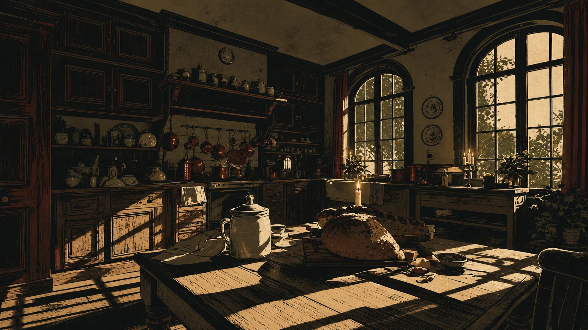
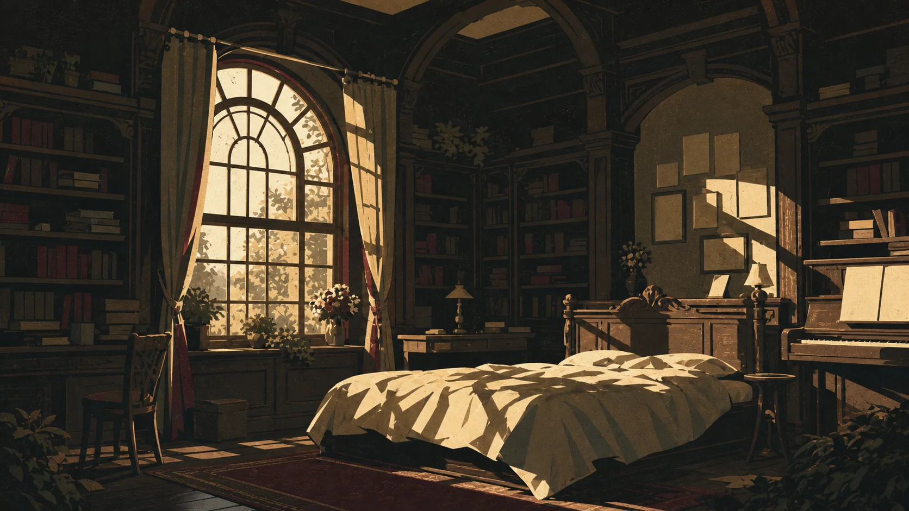
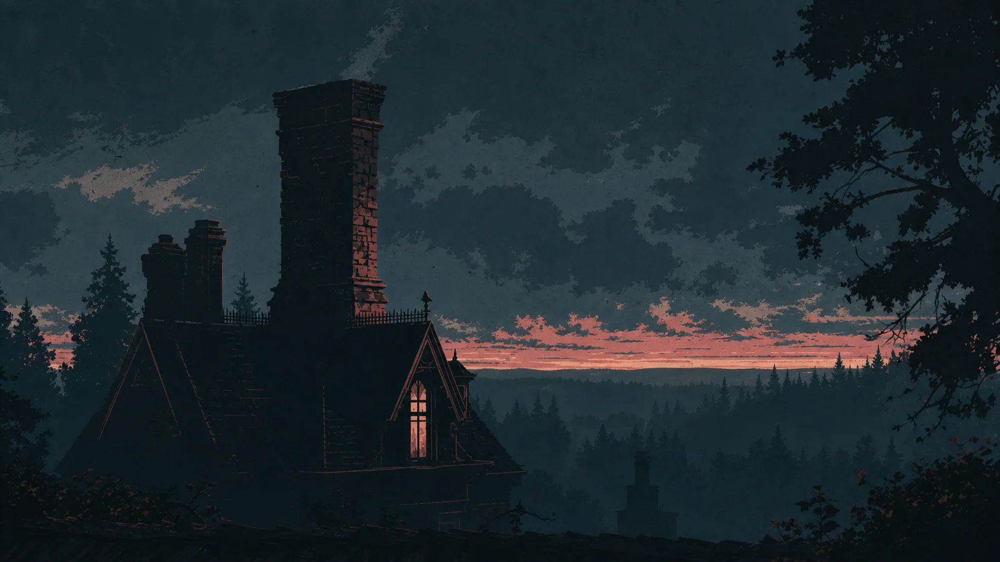
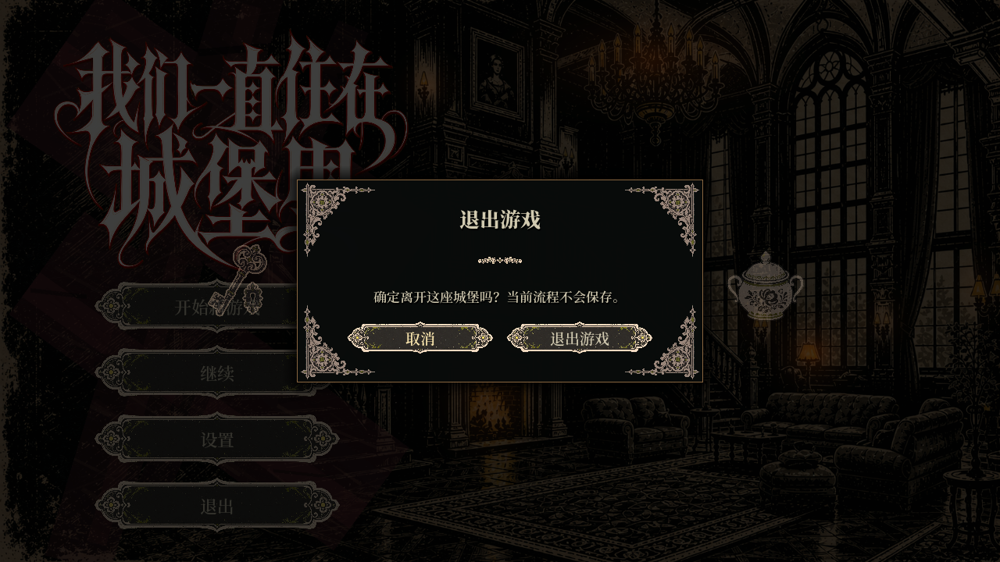
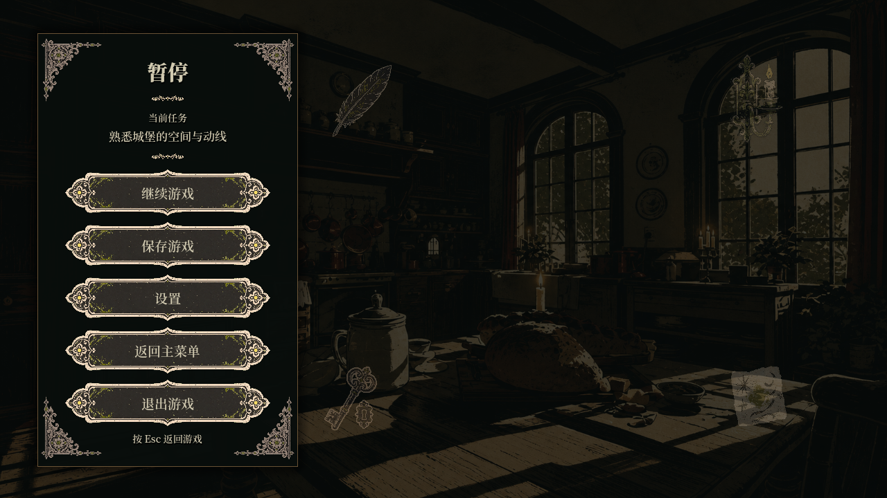
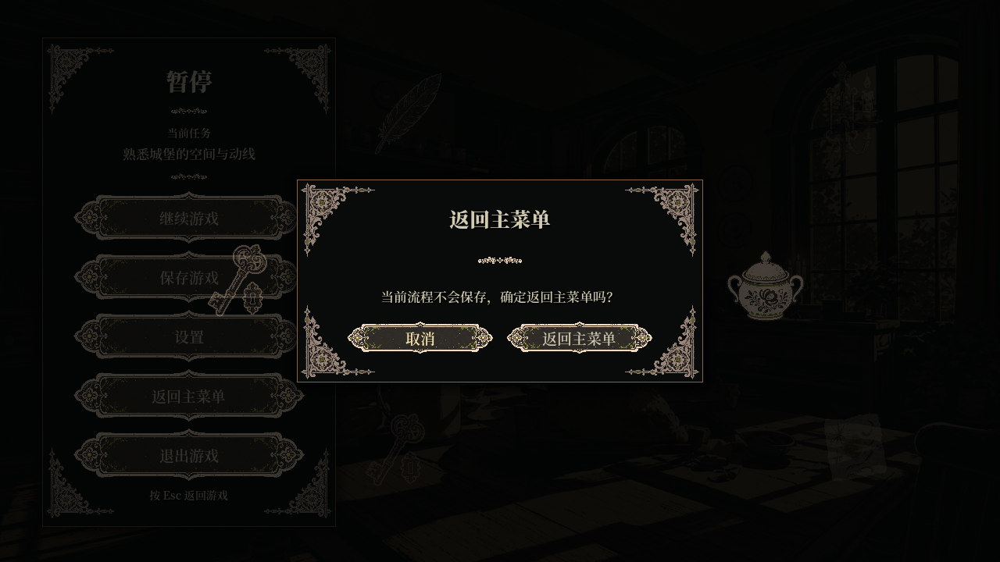
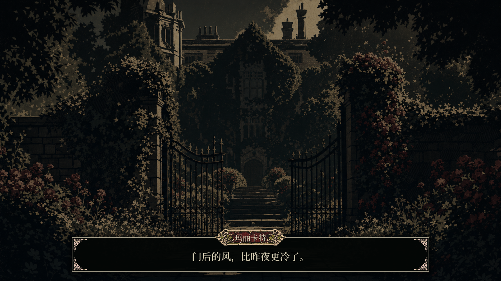

接近
空間觸發器檢測玩家與可交互物件。
三維城堡敘事原型
一個通過房間、線索物件、對話與選擇，逐步揭開家庭故事的第一人稱遊戲。







故事原型受到 Shirley Jackson 小說 We Have Always Lived in the Castle（《我們一直住在城堡裡》）啟發，延續了原著中家庭空間的不安氛圍與對家族往事的疑問。
團隊將小說中的家族往事分散在城堡的房間與線索物件中，供玩家在探索時逐步發現。玩家通過閱讀、收集、對話與選擇理解故事，並帶著新的線索重訪房間。


空間觸發器檢測玩家與可交互物件。
故事控制器調用對話、閱讀、拾取、選擇或小遊戲。
不同 UI 狀態暫停、揭示或改變下一步行動。
會話與世界狀態記錄線索、選擇和關卡進度。
玩家接近人物時觸發對話，由對話管理器調用相應內容。
書籍、紙條和線索物件進入獨立閱讀狀態，但不離開當前場景。
玩家選擇的回答會被記錄為故事狀態，供後續事件調用。
可收集物將物件交互與持續保存的會話數據連接起來。
玩家在探索過程中完成小型交互任務，推進局部情節。
選單、載入、暫停與確認界面支援遊戲過程中的操作切換。
原型通過短篇幅的小遊戲串聯情節，也在城堡中設置隱藏路徑，供玩家在探索時發現。
這個小遊戲改編自小說中的糖罐投毒事件。原著中，Merricat 在糖罐中放入砒霜，造成多名家人死亡；姐姐 Constance 受審後獲判無罪。遊戲為簡化敘事省略了朱利安一角，並將糖罐事件改編為結合音樂與節奏的互動，用於串聯和推動情節。

第二個小遊戲圍繞姐妹關係中的歌聲設計，要求玩家尋找共同頻率。這是團隊對人物關係的互動改編。
原著中，村裡的孩子以投毒事件編成童謠，嘲弄 Merricat；歌聲伴隨著姐妹所承受的外界敵意。遊戲中的共同頻率則用於表達姐妹之間的聯繫，並通過聲音任務推動情節。

密道藏在城堡的日常空間裡。玩家需要仔細探索、發現入口，再穿過密道繼續前進。尋找路徑因此也是推進情節的一部分。

玩家在房間中找到的物件與線索，逐步揭示家族往事。
交互界面及其視覺狀態保留了深色版畫風格，同時讓閱讀線索和做出選擇等不同操作能夠被立即辨認。








主用資產庫包含 60 個 GLB 文件。文件保留的元數據顯示，其中 57 個來自 Tripo/VAST AIGC，3 個為 Blender 導出。資產製作包括物件生成，以及後續的篩選、命名、清理、組合與場景配置。
使用 Tripo3D 生成道具與家具候選。
按照房間、線索功能和製作優先級整理。
通過 Blender 清理並合併選中的物件。
導入 Godot，設置燈光、碰撞並連接交互。


Godot 報告提出模塊化關卡、可復用交互模板、信號、線索系統，以及先完成廚房原型的製作順序。
工程包含會話與世界狀態、故事控制器、對話、門、拾取、可讀物、選擇、影片觸發器和小遊戲相關腳本。